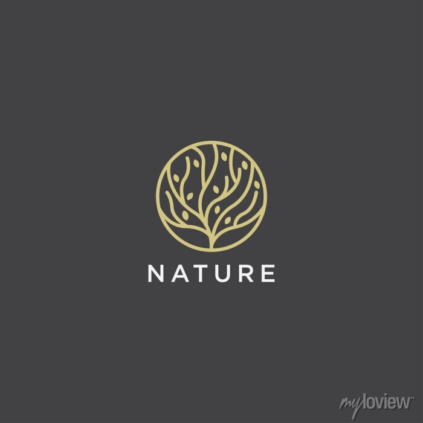

Animals(Fauna)
CHIMPANZEE
Like us, chimps are highly social animals, care for their offspring for years and can live to be over 50. In fact, chimpanzees are our closest cousins; we share about 98% of our genes.
In their habitat in the forests of Central Africa, chimpanzees spend most of their days in the treetops. When they do come down to earth, chimps usually travel on all fours, though they can walk on their legs like humans for as far as a mile.
They use sticks to fish termites out of mounds and bunches of leaves to sop up drinking water.